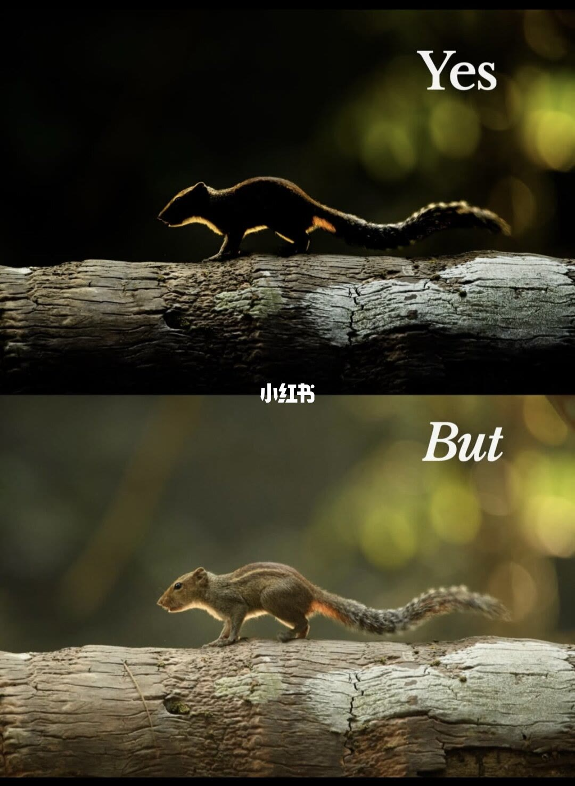
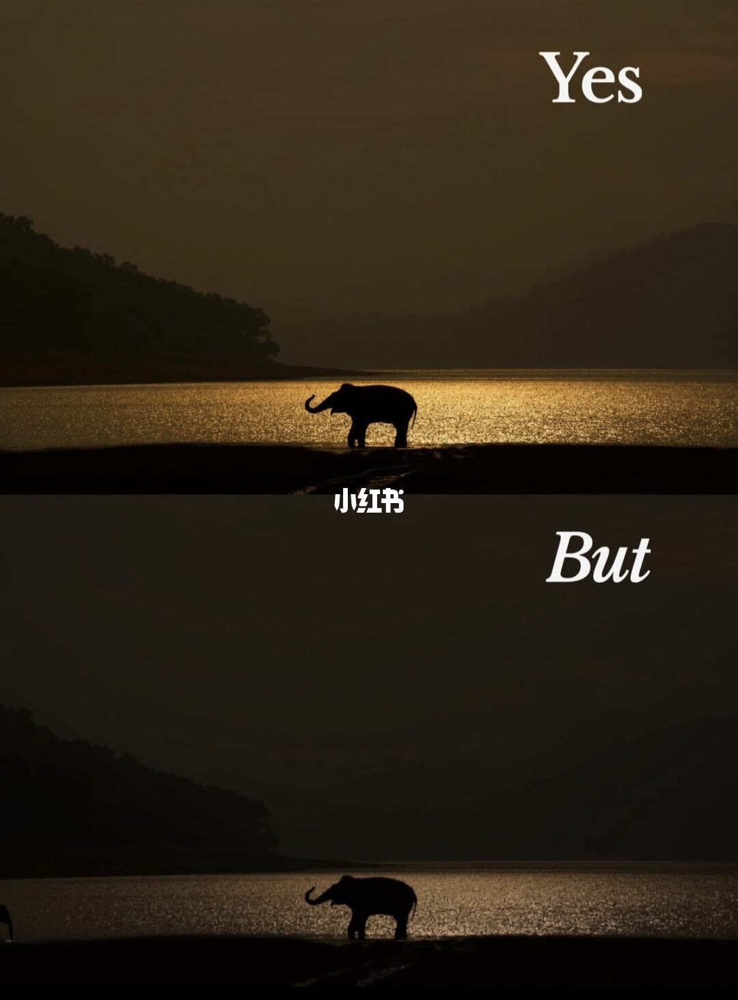
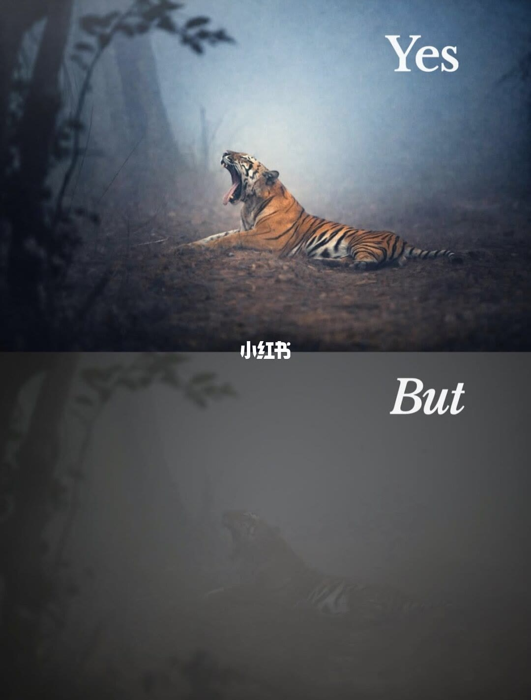
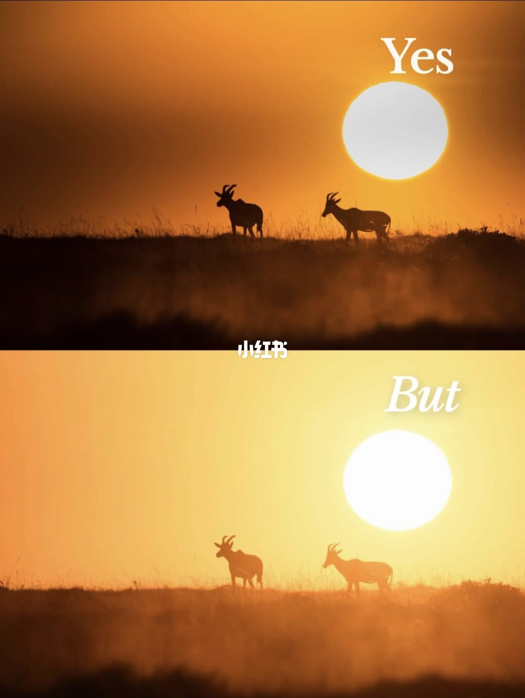
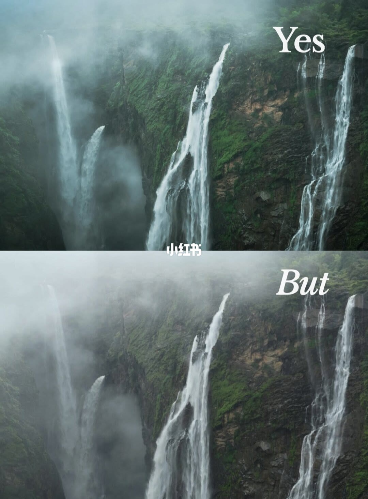
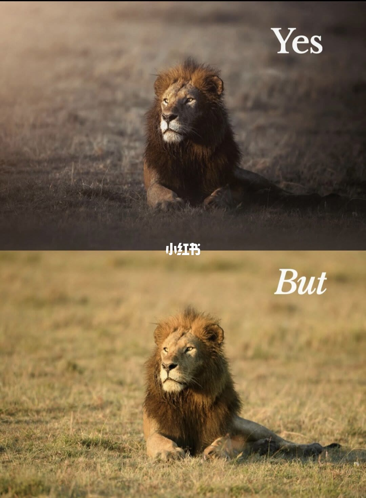
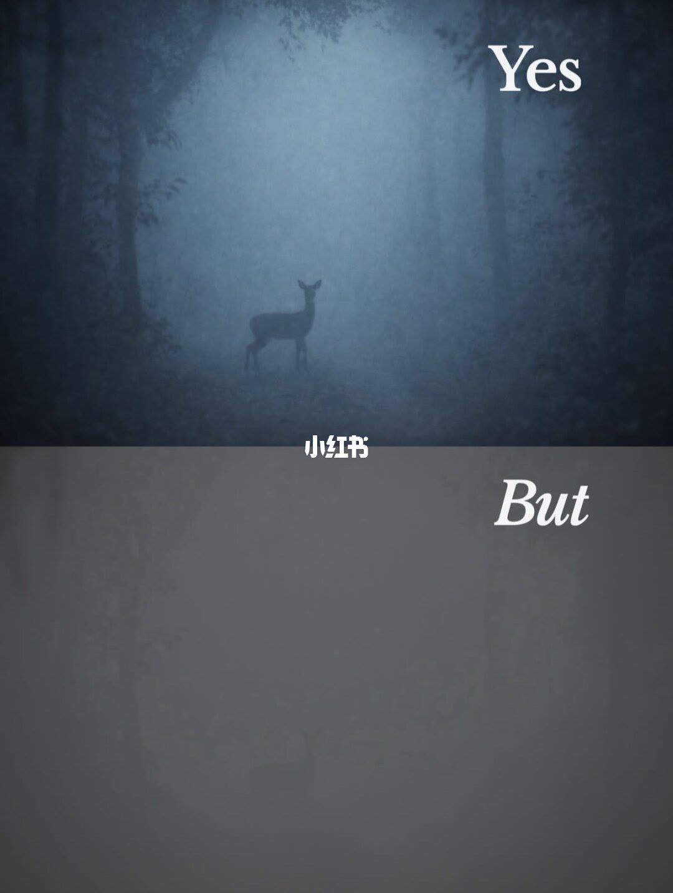
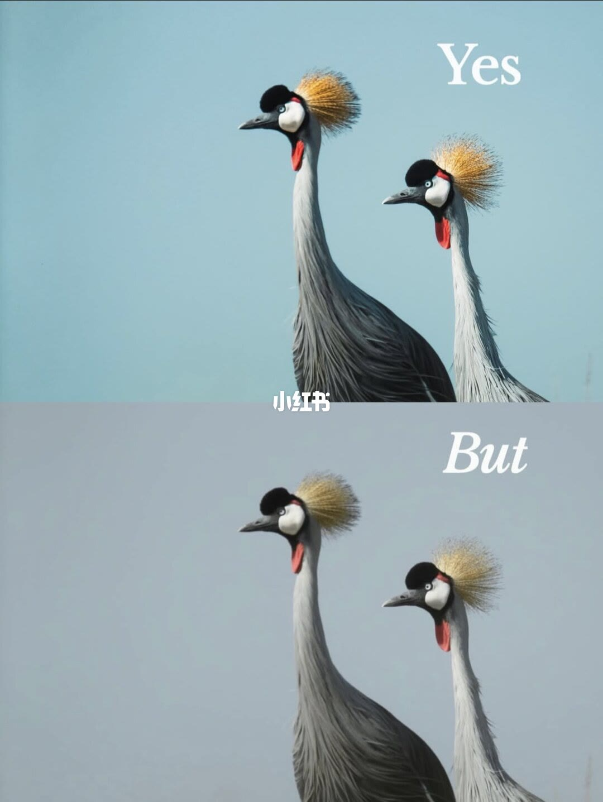
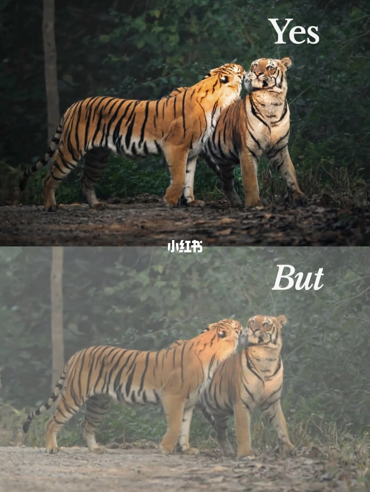
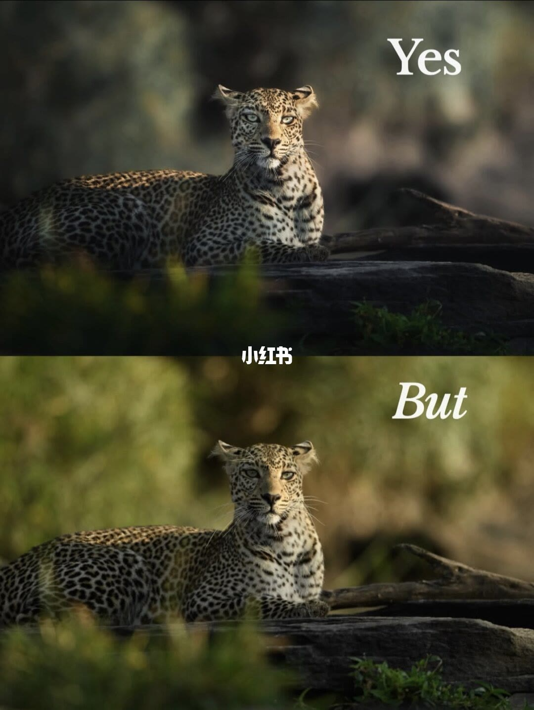

内容要点
保留标准：主体位置与光位正确即可入库；放弃标准不该是「颜色还没出来」。调色优先做三件事：压背景、拉主体光比、选定冷暖情绪。
总结
构图决定「能不能留」；调色决定「值不值得发」。Yes 不是另一种拍摄，是同一张底片的完成态。
1/10 松鼠逆光剪影 Yes vs 提亮细节 But

[1/10] 同一树干松鼠：上为轮廓光剪影，下为提亮后见毛色条纹——构图在，调色决定戏剧还是说明
Same squirrel on a log: silhouette rim light above vs lifted detail below—composition holds; grade picks drama or documentation
2/10 大象水岸金线 Yes vs 头顶留白过多 But

[2/10] 象在水岸金线中：上幅主体贴光带更稳，下幅天空负空间过大冲淡张力
Elephant on a golden waterline: tighter to the light band above; excess sky below weakens tension
3/10 哈欠虎雾林 Yes vs 欠曝灰雾 But

[3/10] 打哈欠的虎：上为蓝雾聚光对比，下为欠曝灰绿——底片别扔，对比度与分区曝光可救
Yawning tiger: blue-mist spotlight above vs underexposed mud below—don't trash flats; contrast and selective light can recover
4/10 羚羊日落剪影 Yes vs 扁平暖金 But

[4/10] 双羚剪影对日：上幅焦糖深橙高反差，下幅提亮发灰——剪影要靠压暗天空成立
Two antelope vs sun: deep burnt-orange silhouette above vs washed gold below—silhouettes need a darker sky
5/10 瀑布崖壁 Yes vs 雾霾平灰 But

[5/10] 多级瀑布：上幅深绿高反差电影感，下幅灰雾扁平——同一构图，对比度即风格
Cascades: deep green contrast above vs hazy flat below—same frame, contrast is the style
6/10 雄狮草地 Yes vs 环境均亮 But

[6/10] 趴卧雄狮：上幅压暗草地聚焦脸鬃，下幅环境均匀明亮——主体隔离靠减背景
Lying lion: darkened grass spotlights face above vs evenly bright field below—isolate subject by killing the background
7/10 雾林鹿 Yes vs 灰片无层次 But

[7/10] 雾中鹿剪影：上幅冷蓝 vignette，下幅灰糊——情绪光比先于器材
Deer in fog: cool blue vignette above vs grey mush below—mood contrast beats gear
8/10 灰冠鹤 Yes vs 低饱和灰底 But

[8/10] 双鹤侧脸：上幅青绿底+冠羽跳色，下幅灰蓝低饱和——背景色相决定贵气
Crowned cranes: cyan field and crest pop above vs dull grey-blue below—background hue sells luxury
9/10 双虎互动 Yes vs 雾霾 Raw But

[9/10] 互嗅双虎：上幅高对比橙黑，下幅灰雾 Raw——野生题材更依赖后期对比
Two tigers nuzzling: punchy orange-black above vs hazy raw below—wildlife leans on post contrast
10/10 豹脸特写 Yes vs 过暖草绿 But

[10/10] 正视豹：上幅偏冷电影绿，下幅过暖黄绿——色温选择即情绪选择
Leopard stare: cooler cinematic green above vs warmer yellow-green below—white balance is mood